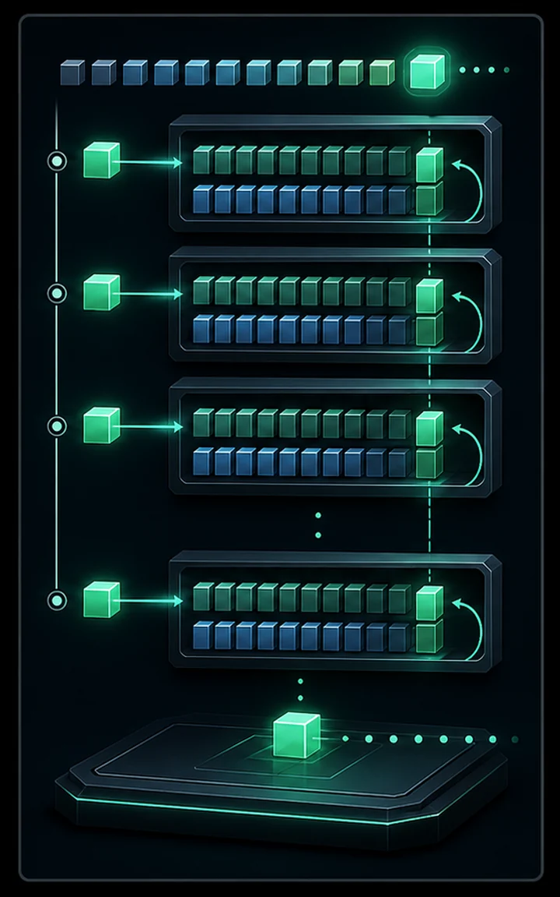
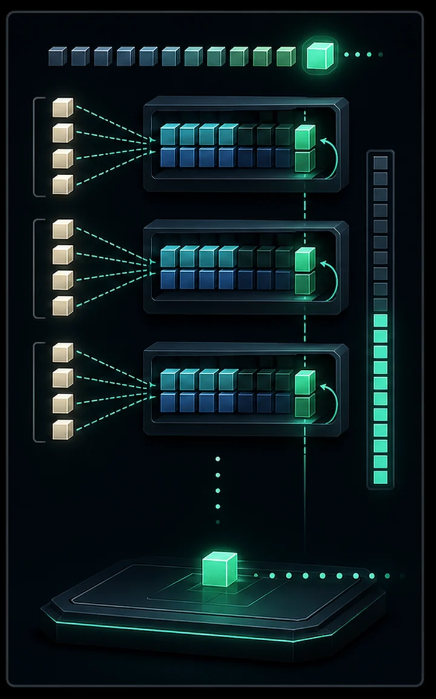

Every generate() so far hid a flaw: to produce one token it re-encodes the entire context, recomputing keys and values that never change. That's O(T²) work. The KV cache stores each layer's past K/V and feeds in only the new token each step — turning generation into O(T).
Proven on the #14 model: identical output to the naive loop with ~31× less work. And this is where #14's GQA finally pays off — a grouped-query model caches fewer kv-heads, so the cache itself is smaller.
During autoregressive decoding, the keys and values of all previous tokens are fixed once computed — yet the naive loop recomputes them at every step, costing O(T²) for a T-token generation. The KV cache stores each layer's past K and V and simply appends the new token's K/V each step, so a step is O(1) projection plus attention over the cache — making the whole generation O(T).
The cache grows linearly with context length and, at long contexts, becomes the dominant consumer of inference memory (often larger than the weights). This is where #14's GQA pays off concretely: fewer key/value heads means a proportionally smaller cache. The output is bit-for-bit identical to the naive loop — it's the same mathematics, just not recomputed.


import importlib.util
import os
import time
import torch
import torch.nn.functional as F
# Reuse the #14 model, its building blocks, and the tokenizer.
spec = importlib.util.spec_from_file_location("modern_gpt", "14_modern_gpt.py")
mg = importlib.util.module_from_spec(spec)
spec.loader.exec_module(mg)
DEVICE = mg.DEVICE
BLOCK = mg.BLOCK_SIZE
tg = mg.tg
@torch.no_grad()
def naive_generate(model, prompt, n_new):
"""The old way: re-encode the whole context every single step."""
idx = torch.tensor([prompt], device=DEVICE)
token_forwards = 0
for _ in range(n_new):
ctx = idx[:, -BLOCK:]
token_forwards += ctx.shape[1] # every token re-processed
logits, _ = model(ctx)
nxt = logits[:, -1, :].argmax(dim=-1, keepdim=True)
idx = torch.cat([idx, nxt], dim=1)
return idx[0].tolist(), token_forwards
@torch.no_grad()
def _step(model, caches, token_id, pos):
"""Run ONE token through the layers at absolute position `pos`, updating
the per-layer K/V caches, and return the next-token logits."""
B = 1
groups = mg.N_HEAD // mg.N_KV_HEAD
x = model.token_emb(torch.tensor([[token_id]], device=DEVICE)) # (1, 1, C)
cos, sin = model.cos[pos:pos + 1], model.sin[pos:pos + 1]
for i, block in enumerate(model.blocks):
a = block.attn
h = block.attn_norm(x)
q = a.q_proj(h).view(B, 1, mg.N_HEAD, mg.HEAD_DIM).transpose(1, 2)
k = a.k_proj(h).view(B, 1, mg.N_KV_HEAD, mg.HEAD_DIM).transpose(1, 2)
v = a.v_proj(h).view(B, 1, mg.N_KV_HEAD, mg.HEAD_DIM).transpose(1, 2)
q, k = mg.apply_rope(q, cos, sin), mg.apply_rope(k, cos, sin)
# Append this token's K/V to the cache, then attend over ALL of it.
if caches[i]["k"] is None:
caches[i]["k"], caches[i]["v"] = k, v
else:
caches[i]["k"] = torch.cat([caches[i]["k"], k], dim=2)
caches[i]["v"] = torch.cat([caches[i]["v"], v], dim=2)
K, V = caches[i]["k"], caches[i]["v"] # (1, n_kv, pos+1, hd)
Kr = K.repeat_interleave(groups, dim=1) # GQA: share kv across heads
Vr = V.repeat_interleave(groups, dim=1)
att = (q @ Kr.transpose(-2, -1)) / mg.HEAD_DIM ** 0.5 # (1, nh, 1, pos+1)
att = F.softmax(att, dim=-1) # no mask: cache is all past
o = (att @ Vr).transpose(1, 2).contiguous().view(B, 1, mg.N_HEAD * mg.HEAD_DIM)
x = x + a.o_proj(o)
x = x + block.ffn(block.ffn_norm(x))
return model.head(model.norm(x))[:, -1, :] # (1, vocab)
@torch.no_grad()
def cached_generate(model, prompt, n_new):
"""The fix: prefill the prompt into per-layer caches, then emit one token
at a time, processing only the newest token each step."""
caches = [{"k": None, "v": None} for _ in model.blocks]
tokens = list(prompt)
token_forwards = 0
pos = 0
logits = None
for t in prompt: # prefill the prompt
logits = _step(model, caches, t, pos); pos += 1; token_forwards += 1
for _ in range(n_new): # then generate
nxt = int(logits.argmax(dim=-1))
tokens.append(nxt)
logits = _step(model, caches, nxt, pos); pos += 1; token_forwards += 1
return tokens, token_forwards
def cache_bytes(n_tokens, kv_heads, dtype_bytes=2):
"""Total KV-cache size: 2 (K&V) x layers x kv_heads x head_dim x tokens."""
return 2 * mg.N_LAYER * kv_heads * mg.HEAD_DIM * n_tokens * dtype_bytesif not os.path.exists(mg.CKPT_PATH):
raise SystemExit("No modern_gpt.pt — run `python 14_modern_gpt.py` first.")
model = mg.ModernGPT().to(DEVICE)
model.load_state_dict(torch.load(mg.CKPT_PATH, map_location=DEVICE)["model"])
model.eval()
prompt = tg.encode("ROMEO:") # a real prompt -> readable output
N = BLOCK - len(prompt) - 1 # stay within the trained context
naive_ids, naive_fw = naive_generate(model, prompt, N)
cached_ids, cached_fw = cached_generate(model, prompt, N)
print("=== Correctness ===")
print(f"naive and cached produce identical tokens: {naive_ids == cached_ids}")
print(f"sample: {tg.decode(cached_ids)!r}\n")
print("=== Work done (token-forwards through the layers) ===")
print(f"naive : {naive_fw:5d} (~T^2/2 — recomputes the whole context each step)")
print(f"cached: {cached_fw:5d} (T — prefill + one new token per step)")
print(f"-> {naive_fw / cached_fw:.0f}x less work for {N} new tokens\n")
print("=== Wall-clock (30 runs) ===")
t0 = time.perf_counter(); [naive_generate(model, prompt, N) for _ in range(30)]
t_naive = time.perf_counter() - t0
t0 = time.perf_counter(); [cached_generate(model, prompt, N) for _ in range(30)]
t_cached = time.perf_counter() - t0
print(f"naive : {t_naive:.2f}s")
print(f"cached: {t_cached:.2f}s ({t_naive / t_cached:.1f}x faster)\n")
print("=== KV-cache memory @ full context (fp16) ===")
gqa = cache_bytes(BLOCK, mg.N_KV_HEAD)
mha = cache_bytes(BLOCK, mg.N_HEAD)
print(f"GQA ({mg.N_KV_HEAD} kv-heads): {gqa/1024:.1f} KB")
print(f"full multi-head ({mg.N_HEAD} heads): {mha/1024:.1f} KB "
f"-> GQA is {mha/gqa:.0f}x smaller")
print("\nThis cache is what Google's TurboQuant compresses (next: #16).")=== Correctness === naive and cached produce identical tokens: True sample: 'ROMEO:\nI shall be so seem the souls of the coursed\nThat well th' === Work done (token-forwards through the layers) === naive : 1938 (~T^2/2 — recomputes the whole context each step) cached: 63 (T — prefill + one new token per step) -> 31x less work for 57 new tokens === Wall-clock (30 runs) === naive : 1.30s cached: 0.96s (1.4x faster) === KV-cache memory @ full context (fp16) === GQA (2 kv-heads): 48.0 KB full multi-head (4 heads): 96.0 KB -> GQA is 2x smaller This cache is what Google's TurboQuant compresses (next: #16).